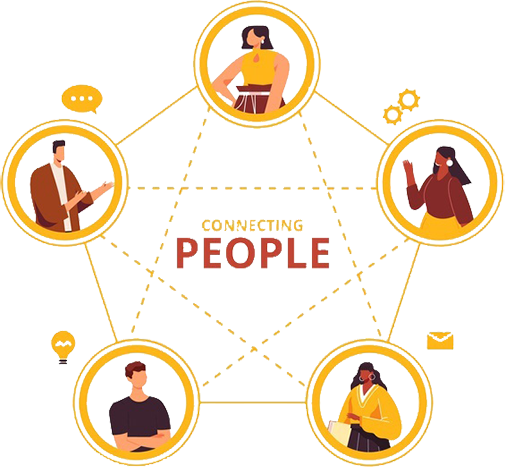

Развитие общества можно охарактеризовать теми или иными особенностями коммуникационных процессов. Чем разнообразнее культура коммуникационных процессов, тем выше и сложнее уровень технологического и социального развития общества. Сейчас мы попробуем оценить влияние информационных технологий на современную культуру коммуникации.
Наиболее простое определение коммуникации сформулировал О. Есперсен, говоря о ней, как о «деятельности, при которой одна личность добивается понимания со стороны другой, и деятельность другой личности, которая добивается понимания того, что было в сознании первой».
Суть отражается в одном емком вопросе: «Кто, что, с какой целью, кому говорит, по какому каналу, с каким эффектом?» То есть коммуникацию можно воспринимать как попытку одной личности понять другую, как возможность задать вопрос к точке зрения собеседника.
Безусловно, понятие коммуникации связано с передачей смыслов. Данный процесс происходит с помощью языка, которым владеют субъекты коммуникации. Универсальным среди множества языков является язык схематизации. С помощью схемы можно визуализировать смысл, доступный каждому.
Во всех моделях коммуникации можно выявить устойчивую закономерность процесса общения: информация, поступая извне, преобразовывается сначала говорящим, потом меняется за счет ситуации общения, различных помех и затем обрабатывается еще раз получателем, не всегда способным отобразить суть полученных данных в той форме, в которой они были отправлены.
Сейчас информация является главным ресурсом общества. Владение свежими данными и их моментальное использование обуславливают и, в то же время, провоцируют, новый формат общения в Интернете.
В первую очередь, как социокультурное явление, удовлетворяющее потребности в коммуникации между людьми, сеть обеспечила перенос социального взаимодействия в информационную среду. Интернет становится средством не только социальной и творческой, но и предпринимательской самореализации.
В результате потребности человека постоянно оставаться «на связи» появляются новые каналы коммуникации. Примером являются социальные сети. Люди всё также взаимодействуют друг с другом, вступают в сообщества, исходя из собственных убеждений и увлечений, распределяются по различным социально-демографическим признакам на определённые категории, но уже не в реальном, а в виртуальном пространстве.
Речь идет не только про коммуникацию, но и про экономическую, предпринимательскую деятельность. Появляются новые профессии и т. д.
Мессенджеры сегодня выступают еще более быстрым каналом поддержания коммуникации. Изначально являясь мобильными приложениями или веб-сервисами для мгновенного обмена сообщениями, они уже стали полноценными коммуникационными платформами, которые реализуют голосовую и видеосвязь, обмен файлами, веб-конференции.
Такие расширенные возможности незаменимы, прежде всего, в бизнес-сфере, делая возможной непрерывную связь с деловыми партнерами, начальством и коллегами. Более того, появляется возможность создавать новостные каналы и быть в курсе последних событий в интересующей вас сфере
Постепенно возможным становится и исключение из привычной схемы коммуникации живого слушателя. Ему на смену все чаще приходит виртуальный мир с его играми, интерактивными фильмами, книгами и т. д.
За помощью теперь люди обращаются к виртуальным ассистентам или голосовым помощникам, которые выполняют задачи для пользователя на основе запроса, данных о местонахождении человека, а также информации, полученной из различных интернет-ресурсов.
Развивая эту мысль, стоит помнить, что эта информация не просто хранится в памяти наших смартфонов и компьютеров. В Интернете любая деятельность становится общественным достоянием, объемы которого увеличиваются с каждой минутой пользования людьми социальными сетями, мессенджерами и различного рода поисковиками.
Развитие социальной коммуникации в сети показывает, что пользователи активно публикуют конфиденциальную информацию о собственной профессиональной, учебной, творческой деятельности. В открытом доступе оказываются и данные о реальном местонахождении человека, месте проживания, философских воззрениях, вкусовых и политических предпочтениях.
Согласно мировой базе данных, до 2025 года ежегодно количество гигабайт на душу населения будет только расти – примерно на 21 % в год. В 2025 году в среднем пользователь Сети будет взаимодействовать с данными каждые 18 секунд.
Это подводит нас к следующей особенности – сложности восприятия информации в интернете.
Наличие всех этих данных в открытом доступе не может не сказываться на нашем мышлении. Рассуждая на тему влияния социальных сетей на деятельность человека, Андрей Курпатов, научный руководитель лаборатории нейронаук и поведения человека Сбербанка России, утверждает, что сейчас происходит переход от «Галактики Гутенберга» к «Галактике Цукерберга», где гиперинформационная среда негативно сказывается на эффективности работы человеческого мозга.
Исследовательница Стэндфордского университета, Эшли Чен, подчеркивает, что при постоянном потреблении информации из социальных сетей зона мышления головного мозга не получает энергию и «впадает в спячку». Как результат, молодые люди, проводящие в социальных сетях от 2 до 3 часов в день, редко «включают голову», мыслят стереотипно, шаблонно и не развиваются
В «Галактике Цукерберга» пользователи становятся легкой мишенью для манипуляций. Научный сотрудник Центра по изучению коммуникационного лидерства и политики Университета Южной Калифорнии Василий Гатов отмечает, что общество уже переходит в "информационное состояние «постправды» («Post-truth»), где наблюдается возрастание роли социальных медиа."
С достаточно высокой скоростью распространяются, так называемые, «фейкньюс» с целью влияния на массовое сознание общества. Если раньше СМИ полностью контролировали поток информации и были основным источником новостей, то с появлением Интернет-блогов за первоисточником информации стало сложнее следить. Все чаще мы сталкиваемся с чужим субъективным мнением и принимаем его за факт, которому можно верить.
При этом, надо понимать, что возможности информационных технологий позволяют самореализовываться и бесчестным, малопорядочным пользователям, делая ключевым вопрос безопасности в информационном пространстве. В другой лекции нашего курса «как выжить в Интернете» ведущий программист Яндекса, А. Гейн, подчеркивает растущую необходимость вмешательства в процесс распространения информации.
Государства разных стран мира по-разному регламентируют правила коммуникации в Интернет пространстве. В качестве мер контроля уже активно обсуждается список обязательных правил пользования Интернетом, среди которых: введение универсальной идентификации пользователей сети (фактически ликвидация анонимности), взимание платы с провайдеров за размещение контента, установление контроля над оборотом информации на территории каждой страны и многое другое.
Как следствие приведенных особенностей коммуникации, модифицируется и восприятие человеком информации. Возможность легкого доступа к данным меняет понятие памяти человека. Если раньше память человека была ограничена естественными возможностями его мозга, а, в последующем, прочитанными материалами из книг и других источников, то теперь информацию можно держать в системах хранения.
Как это повлияет на человека, пытались выяснить в Московском институте психоанализа. Исследователи тестировали детей, использовавших Интернет в разных количествах. У всех опрошенных наблюдалось изменение памяти: она становилась «выносной», более пространственной. Например, если детям нужно было вспомнить какой-то кусок информации, дату или исторический факт, они вспоминали не ее, а место, где ее видели, например страницу в «Википедии».
Так, для нового поколения важными навыками становятся умения поиска, анализа и отбора действительно полезной информации среди "свободных" данных, количество и свойства которых в 21 веке становятся культурной особенностью общества.
Другими словами, все обсуждаемые особенности интернет-коммуникаций стали частью современной культуры. Что такое культура?
В зависимости от подхода можно рассматривать культуру с точки зрения философии, как систему воспроизводства и развития человека как субъекта деятельности; с точки зрения социологии, как систему ценностей и норм; и с точки зрения антропологии, как систему артефактов, знаний и верований. Антропологи Кребер и Клакхон утверждали, что суть этой культурной системы основана на схематизированных способах мышления, восприятия и реагирования, передаваемых с помощью символов – характерного достижения человеческих групп, а также их воплощения в материальных произведениях. Все это определяет исторически определённый уровень развития общества, его организационный, творческий, ценностный и духовный потенциалы.
Объединить все аспекты можно в более емкое определение. Культурологи Баннер Э.А. и Злобин Н.С. представили культуру ничем иным, как живым процессом человеческой деятельности. Проще говоря, это ежедневно воспроизводимые практики, то, что человек создает здесь и сейчас, оставляя уникальный след во всемирной истории.
В свою очередь, на мироощущение человека и его самовыражение будут влиять тенденции развития общества, в котором он живет. Немецкий социолог Никлас Луман описывал этот феномен следующим образом: «культура развивается благодаря изменениям в технике коммуникации в новых условиях».
Универсальный инструмент коммуникации 21 века – Интернет – это не просто один из найденных человечеством способов хранения и трансляции опыта, это способ организации новой культуры. По масштабу своего воздействия на мировую культуру феномен Интернета сопоставим с изобретением письменности и книгопечатания. Если раньше вся важная информация фиксировалась в бумажных изданиях и являлась самым достоверным источником, то сейчас на смену линейной последовательности книжного текста приходит бесконечно ветвящаяся, многократно пересекающаяся и постоянно обновляющаяся сеть Интернет.
Как и все системы, культура Интернет-коммуникации имеет ряд характеристик, которые являются как показателями их успешности, так и областями для беспокойства. К этим характеристикам мы относим:
В первую очередь, отметим скорость. Интернет сеть самим своим появлением многократно ускорила передачу информации. Любое происшествие, крупное или мелкое, моментально передается от человека к человеку посредством большого количества платформ и инструментов.
Скорость распространения слухов подобна скорости заражения гриппом. На каждую публикацию незамедлительно появляется реакция, по цепочке распространяемая людьми повсеместно в различных форматах – видео, фото, репостах и личных сообщениях в социальных сетях.
Так, ускорение процесса появления новостей в общем доступе провоцирует изменения и в мире, в целом.
Подобная скорость реакции на информацию, ежеминутно появляющуюся онлайн, провоцирует упрощение этих самых реакций. Еще одной особенностью культуры становится изменение языка. Происходит минимизация высказываний, но возрастает стремление к излишней эмоциональности и стандартизации высказываний с помощью клише и смайликов, которые могут заменять собой целые фразы.
Люди хотят получать и реагировать на информацию без лишнего ожидания, с той скоростью, с которой данные, в принципе, загружаются в сеть.
Так как изменения в языке затрагивают все население, в этой связи возникает вопрос масштабов доступа людей к информации. Процесс развития Всемирной сети по данным портала Hootsuite сейчас достиг такого уровня, когда, при наличии 7,7 млрд. жителей на планете, 4,54 млрд. уже сегодня имеют доступ во всемирную паутину. В частности, за 1 год наблюдается прирост на 298 млн. новых интернет-пользователей.
Подчеркнем, что подобная активная вовлеченность людей в Интернет-жизнь имеет и свои последствия. Сегодня любые действия и просмотры в Интернете формируют цифровой след, содержание которого позволяет по существу отразить жизнь отдельного человека, и таких данных ежедневно становится всё больше.
В конечном счете, количество формируемой современным человечеством информации открывает перед нами большие возможности, но также и немалые сложности. Американский социолог Дана Бойд описывает Интернет, как публичное приватное пространство. То есть человек не всегда до конца знает, насколько публичным является то или иное его действие. К сожалению, любая ваша конфиденциальная информация может стать доступна для лиц, занимающихся мошенничеством. Есть ли способ это предотвратить? Прежде всего, важно отдавать себе отчёт о том, на каких ресурсах вы указываете персональные данные, поскольку ваша цифровая жизнь, ваш образ в сети будет сохранён навсегда.
Таким образом, как мы видим, интернет и цифровизация оказывает неоценимое воздействие на культуру коммуникаций. Находясь в эпицентре этих изменений сложно сказать: Соцсети это классно или опасно? Ответ на этот вопрос ждет нас в самом ближайшем будущем!